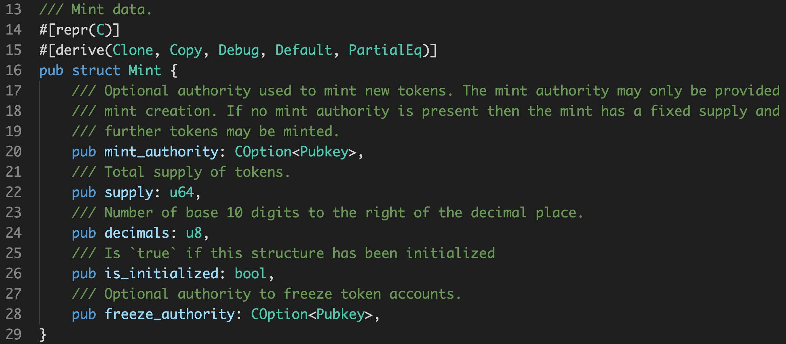

Effective Solana On-chain Programs
Created by CZ@SolongWallet
议 题
- Solana合约开发的基本概念
- HelloWolrd合约
- Solana合约开发的陷阱与缺陷
Solana的合约程序主要干三个事情
- 解析由runtime传过来的instruction
- 执行instruction对应的逻辑
- 将执行结果中需要落地的部分，pack打包输出到指定的Account文
Instruction：
export class TransactionInstruction {
keys: Array = [];
programId: PublicKey;
data: Buffer = Buffer.alloc(0);
constructor(opts?: TransactionInstructionCtorFields) {
opts && Object.assign(this, opts);
}
}
pub fn process(_program_id: &Pubkey, accounts: &[AccountInfo], input: &[u8]) -> ProgramResult

Transactions：
export class Transaction {
signatures: Array = [];
feePayer: ?PublicKey;
instructions: Array = [];
recentBlockhash: ?Blockhash;
nonceInfo: ?NonceInformation;
...
}
Account 定义：
SPL Account 定义：
Mint 定义：
PublicKey 定义：

Program Result 定义：
/// Reasons the program may fail
#[derive(Clone, Debug, Deserialize, Eq, Error, PartialEq, Serialize)]
pub enum ProgramError {
/// Allows on-chain programs to implement program-specific error types and see them returned
/// by the Solana runtime. A program-specific error may be any type that is represented as
/// or serialized to a u32 integer.
#[error("Custom program error: {0:#x}")]
Custom(u32)
#[error("The arguments provided to a program instruction where invalid")]
InvalidArgument
...
}
use std::{
result::Result as ResultGeneric,
};
pub type ProgramResult = ResultGeneric<(), ProgramError>;
HelloWorld功能如下
- DApp调用一个名为`printhello`的接口，该接口发送一个Transaction 到链上
- 该Transaction包含两条Instruction：一条创建一个Account文件，一条将 helloworld的参数内容记录在这个Account文件中
- 执行成功后，返回这个Account文件的地址。 DApp可以通过这个地址，查询里面存放的内容
根据上面的逻辑结构，我们依次创建如下几个文件：
* instruction.rs ： 解析由runtime传过来的instruction
* processor.rs : 针对instruction的合约逻辑
* state.rs : 将需要存储的内容进行打包存储
同时为了方便程序书写，我们创建：
* error.rs: 出错处理，定义各种错误
* entrypoint.rs : 结合“entrypoint”特性，封装合约入口
.
├── Cargo.lock
├── Cargo.toml
├── src
│ ├── entrypoint.rs
│ ├── error.rs
│ ├── instruction.rs
│ ├── lib.rs
│ ├── processsor.rs
│ └── state.rs
└── Xargo.tom
合约入口：
entrypoint!(process_instruction);
pub fn process(_program_id: &Pubkey, accounts: &[AccountInfo], input: &[u8]) -> ProgramResult {
let instruction = HelloWorldInstruction::unpack(input)?;
match instruction {
HelloWorldInstruction::Hello {
message,
} => {
msg!("hello-world: HelloWorld");
Self::process_hello(accounts, message)
}
HelloWorldInstruction::Erase=>{
msg!("hello-world: Erase");
Self::process_erase(accounts)
}
}
}
Instruction 定义：
pub enum HelloWorldInstruction {
/// Hello print hello to an Account file
Hello{
/// message for hello
message: String,
},
/// Erase free the hello account
Erase ,
}
Instruction 解析：
impl HelloWorldInstruction {
/// Unpacks a byte buffer into a [HelloWorldInstruction](enum.HelloWorldInstruction.html).
pub fn unpack(input: &[u8]) -> Result {
use HelloWorldError::InvalidInstruction;
let (&tag, rest) = input.split_first().ok_or(InvalidInstruction)?;
Ok(match tag { //HelloWorld
0 => {
let message= String::from(from_utf8(rest).unwrap());
Self::Hello{
message,
}
},
1 => Self::Erase,
_ => return Err(HelloWorldError::InvalidInstruction.into()),
})
}
...
State 存储：
/// HelloWorld data.
#[repr(C)]
#[derive(Clone, Debug, Default, PartialEq)]
pub struct HelloWorldState {
/// account
pub account_key: Pubkey,
/// message
pub message: String
}
State 存储：
fn unpack_from_slice(src: &[u8]) -> Result {
let src = array_ref![src, 0, 289];
let (account_key_buf, message_len_buf, message_buf) = array_refs![src, 32, 1, 256];
let account_key = Pubkey::new_from_array(*account_key_buf);
let message_len = message_len_buf[0] as u8;
let (msg_buf, _rest) = message_buf.split_at(message_len.into());
let message = String::from(from_utf8(msg_buf).unwrap()) ;
Ok(HelloWorldState {
account_key,
message
})
}
fn pack_into_slice(&self, dst: &mut [u8]) {
let dst = array_mut_ref![dst, 0, 289];
let (
account_key_buf,
message_len_buf,
message_buf,
) = mut_array_refs![dst, 32, 1, 256];
account_key_buf.copy_from_slice(self.account_key.as_ref());
message_len_buf[0] = self.message.len() as u8;
message_buf.copy_from_slice(&self.message.as_bytes());
}
处理过程：
fn process_hello(
accounts: &[AccountInfo],
message: String,
) -> ProgramResult {
let account_info_iter = &mut accounts.iter();
let client_info = next_account_info(account_info_iter)?;
let message_info = next_account_info(account_info_iter)?;
// check permission
if !client_info.is_signer {
return Err(ProgramError::MissingRequiredSignature);
}
let mut state = HelloWorldState::unpack_unchecked(&message_info.data.borrow())?;
state.account_key = *client_info.key;
state.message = message;
HelloWorldState::pack(state, &mut message_info.data.borrow_mut())?;
Ok(())
}
处理过程：
pub fn process_erase(accounts: &[AccountInfo]) -> ProgramResult {
let account_info_iter = &mut accounts.iter();
let client_info = next_account_info(account_info_iter)?;
let message_info = next_account_info(account_info_iter)?;
//check permission
if !client_info.is_signer {
return Err(ProgramError::MissingRequiredSignature);
}
let client_starting_lamports = client_info.lamports();
**client_info.lamports.borrow_mut() = client_starting_lamports + message_info.lamports();
**message_info.lamports.borrow_mut() = 0;
Ok(())
}
Solana中的陷阱
- 不要用ETH来类比Solana
- 多参考Token合约
- 多参考SDK代码
Account长度固定
pub fn allocate(pubkey: &Pubkey, space: u64) -> Instruction {
let account_metas = vec![AccountMeta::new(*pubkey, true)];
Instruction::new(
system_program::id(),
&SystemInstruction::Allocate { space },
account_metas,
)
}
如何得到AccountInfo
invoke(
&system_instruction::transfer(
src_info.key,
dst_info.key,
amount,
),
&[
src_info.clone(),
dst_info.clone(),
system_program_info.clone(),
],
)?;
合约和普通记录Account 不具有SOL交易能力：
// The balance of read-only and executable accounts may not change
if self.lamports != post.lamports {
if !self.is_writable {
return Err(InstructionError::ReadonlyLamportChange);
}
if self.is_executable {
return Err(InstructionError::ExecutableLamportChange);
}
}
合约和普通记录Account 不具有SOL交易能力：
// Only the owner of the account may change owner and
// only if the account is writable and
// only if the account is not executable and
// only if the data is zero-initialized or empty
if self.owner != post.owner
&& (!self.is_writable // line coverage used to get branch coverage
|| self.is_executable
|| *program_id != self.owner
|| !Self::is_zeroed(&post.data))
{
return Err(InstructionError::ModifiedProgramId);
}
runtime资源：
Program GJqD99MTrSmQLN753x5ynkHdVGPrRGp35WqNnkXL3j1C consumed 200000 of 200000 compute units
Program GJqD99MTrSmQLN753x5ynkHdVGPrRGp35WqNnkXL3j1C BPF VM error: exceeded maximum number of instructions allowed (193200)
Program GJqD99MTrSmQLN753x5ynkHdVGPrRGp35WqNnkXL3j1C failed: custom program error: 0xb9f0002
Transaction simulation failed: Error processing Instruction 0: Program failed to complete
Program N42Qjxtrb1KMwCshrpbSJxj3khrZwN51VVv5Zdv2AFL invoke [1]
Program log: [solong-lottery]:Instruction: SignIn
Program log: [solong-lottery]:process_signin lottery:award[0] fund[1000000000] price[1000000000] billboard[Epj4jWrXq4JsEAhvDKMAdR47GqZve8dyKp29KdGfR4X] pool[255]
Program log: Error: memory allocation failed, out of memory
Program N42Qjxtrb1KMwCshrpbSJxj3khrZwN51VVv5Zdv2AFL consumed 109954 of 200000 compute units
Program N42Qjxtrb1KMwCshrpbSJxj3khrZwN51VVv5Zdv2AFL BPF VM error: BPF program Panicked in at 0:0
Program failed to complete: UserError(SyscallError(Panic("", 0, 0)))
Program N42Qjxtrb1KMwCshrpbSJxj3khrZwN51VVv5Zdv2AFL failed: Program failed to complete
stack和heap限制：
BpfComputeBudget {
max_units: 100_000,
log_units: 0,
log_64_units: 0,
create_program_address_units: 0,
invoke_units: 0,
max_invoke_depth: 1,
sha256_base_cost: 85,
sha256_byte_cost: 1,
max_call_depth: 20,
stack_frame_size: 4_096,
log_pubkey_units: 0,
};
ELF错误：
Error: dynamic program error: ELF error: ELF error: .bss section not supported
Failed to parse ELF file: read-write: base offet 207896
- No access to
- `rand` or any crates that depend on it
- `std::fs`
- `std::net`
- `std::os`
- `std::future`
- `std::process`
- `std::sync`
- `std::task`
- `std::thread`
- `std::time`
- Limited access to:
- `std::hash`
- `std::os`
- Bincode is extremely computationally expensive in both cycles and call depth and should be avoided
- String formatting should be avoided since it is also computationally expensive
- No support for `println!`, `print!`, the Solana SDK helpers in `src/log.rs` should be used instead
- The runtime enforces a limit on the number of instructions a program can execute during the processing of one instructio
THE END
Thanks!
Created by CZ@SolongWallet